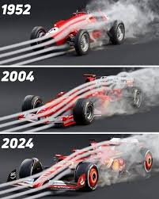

Tecnologia de Corrida
A Ferrari utiliza as pistas de corrida como laboratório para suas tecnologias. Sistemas como controle de tração, freios de cerâmica de carbono e telemetria derivam diretamente da Fórmula 1.

A Ferrari é pioneira em soluções aerodinâmicas que melhoram o desempenho dos veículos. Desde difusores traseiros até sistemas ativos que ajustam o fluxo de ar em alta velocidade, a marca está sempre na vanguarda da engenharia.
Os motores Ferrari combinam potência e eficiência, utilizando tecnologias como turboalimentação e sistemas híbridos. Exemplos incluem o motor V8 biturbo premiado e o sistema híbrido da LaFerrari.
A Ferrari utiliza as pistas de corrida como laboratório para suas tecnologias. Sistemas como controle de tração, freios de cerâmica de carbono e telemetria derivam diretamente da Fórmula 1.